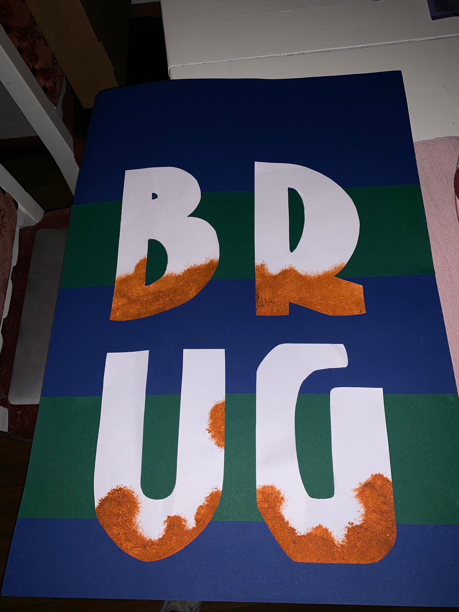
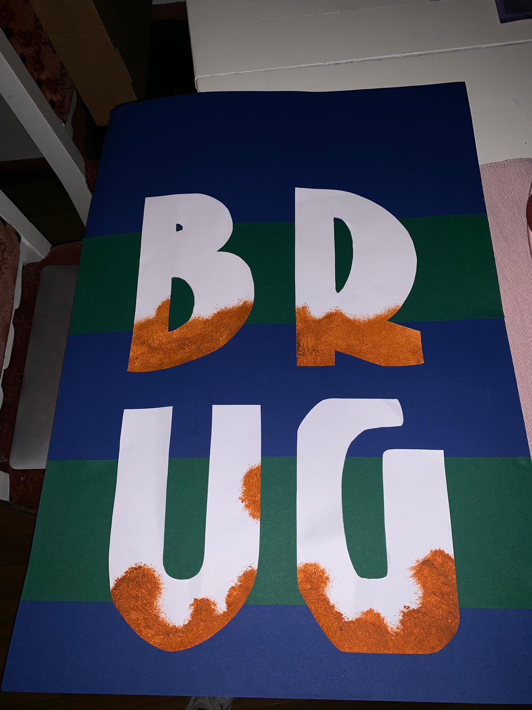

Typografie

"Voor dit vak hebben wij door Amsterdam gelopen om verschillende typografiën te ontdekken. Hierna hebben wij een van deze moeten onderzoeken en uiteindelijk uitwerken tot een poster en een letterpublicatie. Gedurende deze zoektocht ben ik het font van Anton Curver tegen gekomen. Deze is ook wel te herkennen als dé Amsterdamse Brugletter. Om deze uit te werken heb ik vooral gebruik gemaakt van de kleuren groen en bruin, omdat deze kenmerkend zijn voor de bruggen waar de letters met het Curver font op gemonteerd zijn".
 
